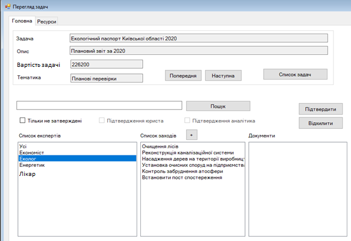

Крок 18. Аналітик формує програму вирішення поставленої задачі, на основі запропонованих експертами заходів, оцінки законності, наявності необхідних ресурсів, вартості виконання заходів, їх пріоритету та оцінки ефективності.
Запропонований перелік експертів дозволяє охопити всі важливі аспекти екологічного, економічного та соціального розвитку громади та забезпечити ефективне прийняття управлінських рішень для сталого розвитку території.